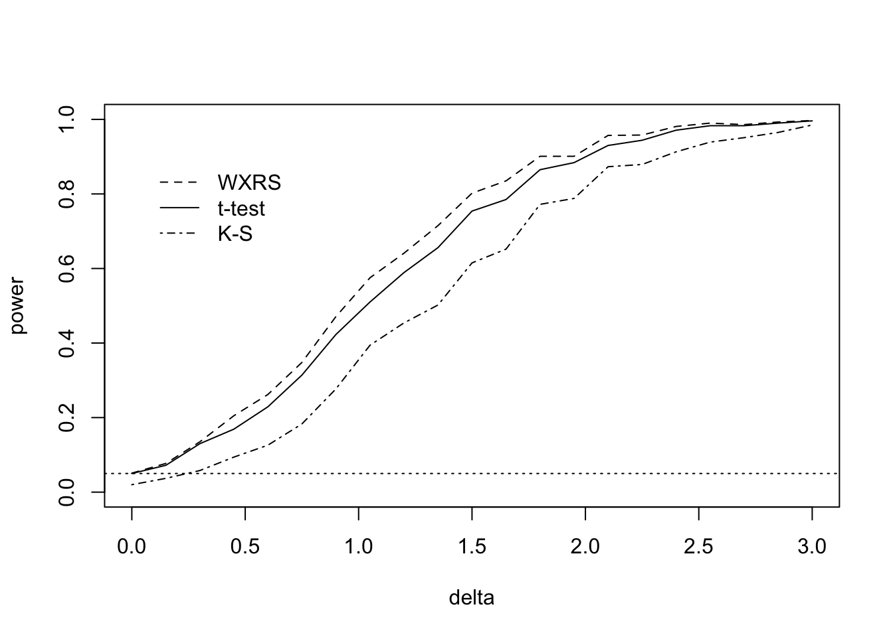

It is difficult to analyze the power of the Wilcoxon rank sum test unless we assume a specific form for the alternative. We will restrict our discussions of power to “location-shift” alternatives.
Suppose \(G(x) = F(x - \delta)\) for all \(x \in \mathbb{R}\) for some \(\delta\) and consider testing \[
\text{$H_0$: $\delta \leq 0$ \quad versus \quad $H_1$: $\delta > 0$.}
\] Note that if \(\delta > 0\), we will have \(G(x) = F(x - \delta)\leq F(x)\) for all \(x\) (\(F\) is non-decreasing), so that \(Y\sim G\) is stochastically greater than \(X \sim F\).
We will consider the power of the test which rejects \(H_0\) when \(W_{XY} \geq c\) for some \(c\). Let \[
\gamma(\delta) = \mathbb{P}_\delta(W_{XY} \geq c)
\] be the power function of the test, where \(\mathbb{P}_\delta(\cdot)\) is probability under \(G(x) = F(x - \delta)\) for all \(x\in\mathbb{R}\). The first property of the test we would like to verify is that its power function \(\gamma(\delta)\) is non-decreasing in \(\delta\).
Proposition 44.1 (Non-decreasing power of Wilcoxon rank sum test in location shift model) The power function \(\gamma(\delta)\) is non-decreasing in \(\delta\).
Introduce independent random variables \(X'_1,\dots,X'_m \sim F\) which are independent of \(X_1,\dots,X_n\). Then we may write \[\begin{align}
\gamma(\delta) &= \mathbb{P}_\delta(W_{XY} \geq c)\\
&= \mathbb{P}_\delta(\textstyle \sum_{i=1}^n \sum_{j=1}^m\mathbf{1}(X_i \leq Y_j) \geq c)\\
&= \mathbb{P}_\delta(\textstyle \sum_{i=1}^n \sum_{j=1}^m\mathbf{1}(X_i \leq X'_j + \delta) \geq c),
\end{align}\] since the \(Y_j\) is equal in distribution to \(X_j + \delta\) for each \(j=1,\dots,m\). From here we see that \(\gamma(\delta_1) \leq \gamma(\delta_2)\) for all \(\delta_1 \leq \delta_2\).
Seeing that the test “makes sense”, in that it does not lose power as the null becomes more untrue, we state an asymptotic approximation to its power in the location shift model.
Theorem 44.1 (Asymptotic approximation to the power of the Wilcoxon rank sum test) In the location-shift model with location shift \(\delta\) we have \[
\gamma(\delta) \approx 1 - \Phi\Big(\frac{c - nmp_1(\delta)}{\vartheta(\delta)}\Big),
\] where \(p_1(\delta) = \mathbb{P}_\delta(X_1 < Y_1)\) and \[\begin{align*}
\vartheta(\delta) &= nmp_1(\delta)[1 - p_1(\delta)] + nm(m-1)[p_2(\delta) - p^2_1(\delta)] + mn(n-1)[p_3(\delta) - p_1^2(\delta)]
\end{align*}\] with \(p_2(\delta) = \mathbb{P}_\delta(X_1 < Y_1, X_2 < Y_1)\) and \(p_3(\delta) = \mathbb{P}_\delta(X_1 < Y_1, X_1 < Y_2)\).
Under \(G(x) = F(x - \delta)\), we have \[
\gamma(\delta) = \mathbb{P}_\delta(W_{XY} \geq c) = \mathbb{P}_\delta\Big(\frac{W_{XY} - \mathbb{E}_\delta W_{XY}}{\sqrt{\mathbb{V}_\delta W_{XY}}}\geq \frac{c - \mathbb{E}W_{XY}}{\sqrt{\mathbb{V}_\delta W_{XY}}}\Big),
\] where \(\mathbb{E}_\delta(\cdot)\) and \(\mathbb{V}_\delta(\cdot)\) represent expectation and variance under \(G(x) = F(x - \delta)\). At this point we would like to claim \[
\frac{W_{XY} - \mathbb{E}_\delta W_{XY}}{\sqrt{\mathbb{V}_\delta W_{XY}}} \stackrel{d}{\rightarrow}\mathcal{N}(0,1)
\] as \(n,m \to \infty\). However, we have only proven this convergence under the null hypothesis \(H_0\): \(F = G\); see Theorem 43.1. It turns out that this convergence holds in general, but one must make use of \(U\) statistics in order to prove it. See the section on \(U\) statistics beginning on page 362 of Lehmann (1975). Assuming this convergence holds, we may write \[
\gamma(\delta)\approx 1 - \Phi\Big(\frac{c - \mathbb{E}_\delta W_{XY}}{\sqrt{\mathbb{V}_\delta W_{XY}}}\Big),
\] for large \(n,m\). Now we consider \(\mathbb{E}_\delta W_{XY}\) and \(\mathbb{V}_\delta W_{XY}\). So that we may have them at our disposal, introduce independent random variables \(X_1',\dots,X_m' \sim F\) which are independent of \(X_1,\dots,X_n\). Now we may write \[
\mathbb{E}_\delta W_{XY} = \mathbb{E}_\delta \sum_{i=1}^n \sum_{j=1}^m\mathbf{1}(X_i \leq Y_j) = nm\mathbb{E}_\delta\mathbf{1}(X_1 \leq Y_1),
\] where \[\begin{align}
\mathbb{E}_\delta\mathbf{1}(X_1 \leq Y_1) &= \mathbb{P}_\delta(X_1 \leq Y_1)\\
&= \mathbb{P}_\delta(X_1 -\delta \leq Y_1 - \delta)\\
&= \mathbb{P}(X_1 -\delta \leq X_1')\\
&= \mathbb{P}(X_1 - X_1' \leq \delta )\\
&= p_1(\delta),
\end{align}\] where \(p_1(\delta) = \mathbb{P}_\delta(X_1 - X_1' \leq \delta )\). This gives \(\mathbb{E}_\delta W_{XY} = nm p_1(\delta)\).
For the variance, we have \[\begin{align}
\mathbb{V}W_{XY} &= \mathbb{V}\Big(\sum_{i=1}^n \sum_{j=1}^m\mathbf{1}(X_i \leq Y_j)\Big) \\
&= \sum_{i=1}^n \mathbb{V}\Big(\sum_{j=1}^m\mathbf{1}(X_i \leq Y_j)\Big) + 2 \sum_{i < i'} \mathbb{C}\Big(\sum_{j=1}^m\mathbf{1}(X_i \leq Y_j),\sum_{j'=1}^m\mathbf{1}(X_{i'} \leq Y_{j'})\Big)\\
\end{align}\]
And so on. I need to finish typing this up.
According to Theorem 44.1, the power under \(H_0\), that is the size of the test, is approximately \[
\gamma(0) \approx 1 - \Phi\Big(\frac{c - nmp_1(0)}{\vartheta(0)}\Big).
\] Setting the above equal to \(\alpha\) and solving leads to \[
c_\alpha = nmp_1(0) + z_\alpha \sqrt{\vartheta(0)} = \frac{1}{2}nm + z_\alpha \sqrt{\frac{1}{12}m(N-m)(N+1)},
\] where the second equality comes from plugging in \(p_1(0)=1/2\), \(p_2(0) = 1/3\), and \(p_3(0) = 1/3\). We have already seen this critical value in the rejection rule in Equation 43.6.
Now we consider the power of the size-\(\alpha\) test, denoting its power function by \(\gamma_\alpha(\delta)\). We may write \[
\gamma_\alpha(\delta) \approx 1 - \Phi\Big(\frac{nm(1/2 - p_1(\delta)) + z_\alpha \sqrt{nm(N+1)/12}}{\sqrt{\vartheta(\delta)}}\Big).
\] From here, we make two further approximations: Letting \(F^*\) be the cdf of \(X_1-X_1'\) and \(f^*\) be the corresponding density (which is symmetric around \(0\)), we assume
The result is the approximation to \(\gamma_\alpha(\delta)\) given by \[
\tilde \gamma_\alpha(\delta) = 1 - \Phi\Big(z_\alpha - \sqrt{\frac{12nm}{N+1}}\delta f^*(0)\Big).
\] Now, if one wanted to do sample size calculations, one still could not use the expression above, since one does not know the density \(f^*\). For the sake of sample-size calculations, one option is to make the assumption that \(F\) and \(G\) are Normal distributions with some variance \(\sigma^2\). In this case one can show \(f^*(0) = (2\sqrt{\pi}\sigma)^{-1}\). If one wishes to have equal sample sizes \(n=m\), then one can use the approximation to \(\gamma_\alpha(\delta)\) given by \[
\tilde \gamma_{\alpha,n,\sigma}(\delta) = 1 - \Phi\Big(z_\alpha - \sqrt{\frac{6n}{\pi}}\frac{\delta}{2\sigma}\Big),
\tag{44.1}\] where we have used \(N-1 \approx 2n\).
So, if one wishes to reject \(H_0\): \(\delta \leq 0\) in favor of \(H_1\): \(\delta > 0\) for some \(\delta^*\) with power at least \(\gamma^*\), one must, according to Equation 44.1, draw samples of size \[
n \geq \frac{\pi}{3}2\sigma^2\Big(\frac{z_\alpha + z_{\beta^*}}{\delta^*}\Big)^2,
\] where \(\beta^* = 1- \gamma^*\).
Interestingly, under the assumption that \(F\) and \(G\) are Normal distributions with variance \(\sigma^2\) and with location shift \(\delta\) between them, one must draw samples of size \[
n \geq 2\sigma^2\Big(\frac{z_\alpha + z_{\beta^*}}{\delta^*}\Big)^2.
\] from each population in order to reject \(H_0\): \(\delta \leq 0\) in favor of \(H_1\): \(\delta > 0\) with power at least \(\gamma^*\) when \(\delta = \delta^*\).
The difference is quite small: We have \(\pi/3 = 1.0471976\), so that the sample size required by the Wilcoxon rank sum test to achieve the same power as the parametric (Neyman-Pearson) test is only scarcely greater. This suggests that the Wilcoxon rank sum test may be nearly as powerful as parametric tests of location shifts.
Figure 44.1 shows the results of a small simulation comparing the power of the Wilcoxon rank sum test with the two-sample t test as well as with the Kolmogorov–Smirnov test under a location shift. Both distributions were double exponential distributions with unit scale parameter.
Code
n <-8m <-12N <- n + mmuX <-1delta <-seq(0,3,length=21)MC <-1000pval_WXY <- pval_T <- pval_KS <-matrix(NA,MC,length(delta))for(j in1:length(delta)){ muY <- muX + delta[j]for(mc in1:MC){ X <-rexp(n)*sample(c(-1,1),n,replace =TRUE) + muX Y <-rexp(m)*sample(c(-1,1),m,replace =TRUE) + muY# Wilcoxon rank sum test Z <-c(X,Y) id <-c(rep(1,n),rep(2,m)) R <-rank(Z)[id ==2] WR <-sum(R) WXY <-sum(R) - m*(m+1)/2 mu <- n*m/2 sigma <-sqrt(m*(N-m)*(N+1)/12) pval_WXY[mc,j] <-1-pnorm((WXY - mu -1/2)/sigma) # with continuity correction# two-sample t-test Sp <-sqrt(((n-1)*var(X) + (m-1)*var(Y))/(n + m -2)) Tstat <- (mean(Y) -mean(X)) / (Sp *sqrt(1/n +1/m)) pval_T[mc,j] <-1-pt(Tstat,df = n + m -2)# K-S test pval_KS[mc,j] <-ks.test(x = X, y = Y)$p.value }}pow_WXY <-apply(pval_WXY <0.05,2,mean)pow_T <-apply(pval_T <0.05,2,mean)pow_KS <-apply(pval_KS <0.05,2,mean)plot(pow_WXY ~ delta, ylim =c(0,1), type ="l", lty =2, xlab ="delta",ylab ="power")xpos <-grconvertX(.05,from ="npc", to ="user")legend(x = xpos,y =0.9,legend =c("WXRS", "t-test","K-S"),lty =c(2,1,4),bty ="n")lines(pow_T ~ delta)lines(pow_KS ~ delta, lty =4)abline(h =0.05, lty =3)

Figure 44.1: Power of the size-\(0.05\) Wilcoxon rank-sum (using the Normal approximation), two-sample t, and Kolmogorov-Smirnov tests for testing the null hypothesis \(F = G\) in the location shift model with location shift \(\delta\). The distributions are the double exponential distributions with scale parameter equal to 1. Sample sizes were \(n = 8\)
Lehmann, E L. 1975. Nonparametrics. Holden-Day, Inc.